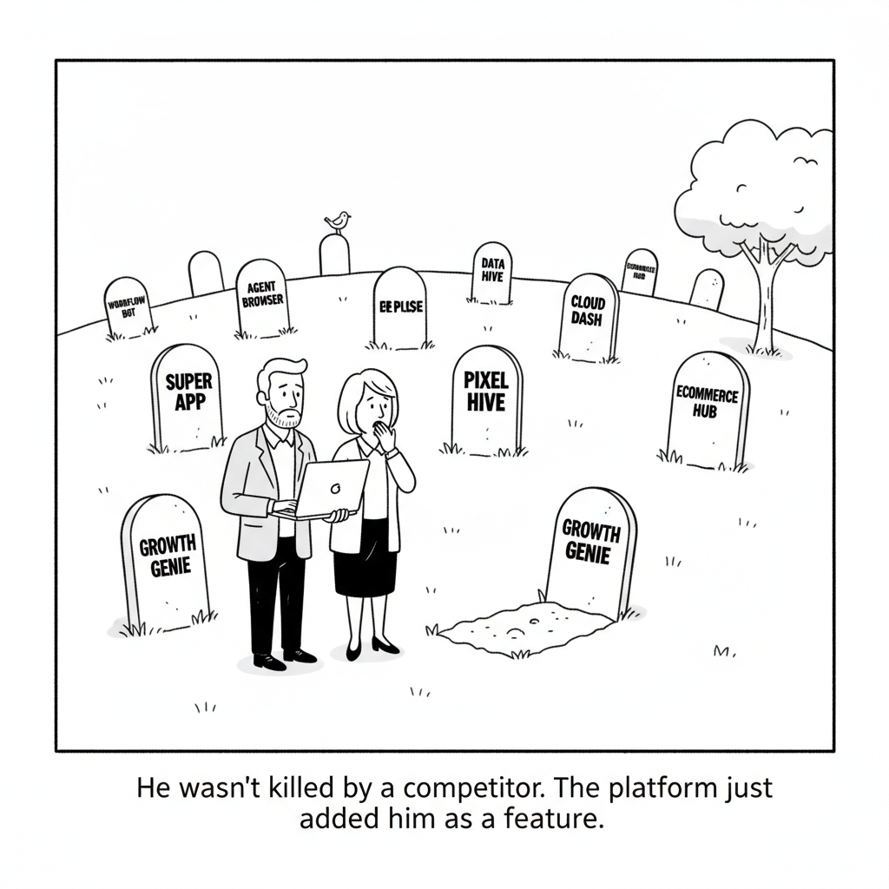

Your daily AI news digest
AI the News That's Fit to Prompt
Here’s the ‘Core Economic Flaw’ in the AI Bull Case as Stock and Bond Trades Unravel, According to a Top Economist
Apollo chief economist Torsten Slok spent the past week issuing a series of warnings about the AI boom as Wall Street pulled back from the sector. On Tuesday he pointed to a recent slowdown in token spending growth, saying the demand curve for compute is flat and highly sensitive to price. Most companies investing in the technology, he added, have yet to see significant productivity returns, so AI looks more like a cost center than a growth driver.
Slok’s core argument is that the marginal cost of producing compute exceeds the marginal benefit it delivers to users, which raises questions about claims of unlimited demand for data centers. He argues the main determinant in data-center construction models is not physical capacity or power but the price users are willing to pay, and that companies will only pay a high price if it brings higher revenue growth, bigger profits, or substantial savings. “Maybe that will come in the future. Maybe not,” he warned. On Thursday he also flagged “circularity” in token spending, saying 80% of the top 1% of AI spenders are VC-backed.
Moonshot’s Kimi K3.1 Pro Flirts With Open-Weights Leadership Amid Paid-Influencer Scandal Allegations
VentureBeat weighs Moonshot’s new Kimi K3.1 Pro, which it says is flirting with leadership among open weights models, against allegations that paid influencers promoted the launch. The article page was blocked to our reader, so this summary rests on the headline alone and the claims are VentureBeat’s to substantiate.
Forced to Pick, Grok’s AI Model Chooses Republicans. OpenAI’s Picks Democrats.
A Convovo study asked two APIs to name one candidate in nearly 500 midterm races. Grok 4.7 chose the Republican in 92% of answers and GPT-6.1 Sol chose the Democrat in 97%, so the two agreed less than 10% of the time. The consumer apps refused to answer, and OpenAI says the API test does not reflect what ChatGPT users see.

“He wasn’t killed by a competitor. The platform just added him as a feature.”
The AI Graveyard: A Running List of Projects and Startups That Didn’t Make It
TechCrunch tracks AI products that shut down, pivoted, or missed expectations. Workflow tool Relay closed in August as larger platforms built the same automation in-house, and Character.ai filed for bankruptcy five years after launch. S&P Global Market Intelligence says about 42% of AI initiatives are abandoned by their corporate parents, and OpenAI shut down Atlas on August 9 after rolling back its July “super app” redesign.
GVS5H: Five Qwen3.8-27B Models Match Claude Fable 5 on LiveCodeBench Hard
A training-free method has fresh instances of one model split a problem and coordinate through a shared filesystem holding a plan, notes, and the current solution. On the 100 latest hard LiveCodeBench problems, orchestrated Qwen3.8 Flash Next reached 93.0% pass@1 against Fable 5’s 90.4% at 9% of the cost, and locally served Qwen3.8-27B rose from 66.8% to 92.4%. The authors note gains are not universal, and some models were unchanged or worse.

How Cerebras Deploys Trillion-Parameter AI Models
Using the roughly 3-trillion-parameter Kimi K3 as its example, Cerebras explains that a single WSE-3T wafer holds 44 GB of on-chip memory. At 4-bit weights each of the model’s 93 layers needs about 16 GB, which puts one dense layer or two linear-attention layers on each wafer and totals 59 wafers. Only activations cross between wafers, at about 2 microseconds per hop, for 1,000 to 2,000+ tokens per second.

Nate B. Jones on Black October and Why Attackers Want Your AI Keys
Jones explains this week’s wave of breaches, why AI keys now behave like cash, how agents help both attackers and defenders, and five steps individuals and builders can take. The study guide walks through each step with timestamps.

AI and the Fall? of the Creative Class
Joseph Politano reports that America has lost more than 200,000 jobs in creative industries over four years, roughly 50,000 of them in the last year, a stretch matched only by the 2001 and 2008 recessions. He notes that proving how much of that is due to AI is extremely difficult, since media firms are deciding for several reasons at once.

Block’s New Voice Model Sounds Eerily Human
Block released Dessa, a full-duplex speech model that can talk and listen at the same time and runs locally. The company says it was trained entirely on human speech and a single NVIDIA GPU rack, with laughs, pauses, and cries built into the model. TechCrunch notes it is unclear whether the emotion is steered by tags, as in some other voice models.

Here Are the Top AI Agents That Can Live in Your Text Messages
TechCrunch rounds up agents you can text like a person, which remember context, connect to your apps, and complete tasks. Instinct is the buzziest, with a $10 billion valuation after a $1 billion round. Ask Proxy costs $1 a day for individuals and starts at $15 per employee per month for large companies, while Caddy lives in iMessage for iPhone and RCS for Android.

Matthew Berman Puts Kimi K3.1 Through Its Paces
Berman ran build tests on K3.1 Pro: a 3D Rubik’s Cube passed, a Blender rope knot failed, and a Fall Guys clone took 48 minutes. His verdict is that the model is very good and close to the frontier, but not near Opus 5.5 or GPT 6.1. He argues cost per completed task is the fairer comparison.

Scammers Used AI to Clone Her Daughter’s Voice and Fake a Kidnapping. A Voice Expert Says Every Family Needs a Safe Word
McAfee found a three-second clip was enough to generate a voice clone with an 85% match. A California mother wired $5,400 to Mexico over five hours after hearing what sounded like her daughter pleading for help, while her daughter was at work. A marketing professor who studies voice recommends each family agree on a safe word.

Every Child Will Get AI. Not Every Child Will Get a Teacher
In this commentary, educator Dmytro Korchevskyi predicts that every child will have an AI tutor while only families who can afford it will have a human teacher. He cites Pew data that one in five teenagers from households earning under $30,000 do all or almost all homework with chatbots, versus 7% in households earning $75,000 or more. The forecast is his opinion.

Reactive Optimizers
The authors put an agent at the heart of the optimizer: it watches training dynamics and rewrites the optimizer’s own source code as training goes. When no recipe has been tuned for a task, they say it matches or beats the best off-the-shelf recipe on image and language tasks, and it came up with schedules to prevent loss spikes and escape overfitting. The OPAL package is available to try.

AI:AM Highlights: Clean Neurons, Black October, the GPU Credit Crunch, and Buying the Supply Chain
Nathan Labenz and Prakash Narayanan ask what sets the pace of AI: money, atoms, or law. Zvi Mowshowitz discusses 2027 timelines, SF Compute’s Evan Conrad argues the bottleneck is credit rather than chips or power, and Cambrian’s Lonis Hamaili argues the supply chain will capture more value than the labs. Labenz discloses he has committed to invest in Cambrian.

David Shapiro on Why Anthropic Is Living in the Future
Shapiro walks through how Anthropic reviews AI-written code with layered automated checks, why the idea is older than AI, and what it means for companies. The study guide breaks the argument into timestamped sections.